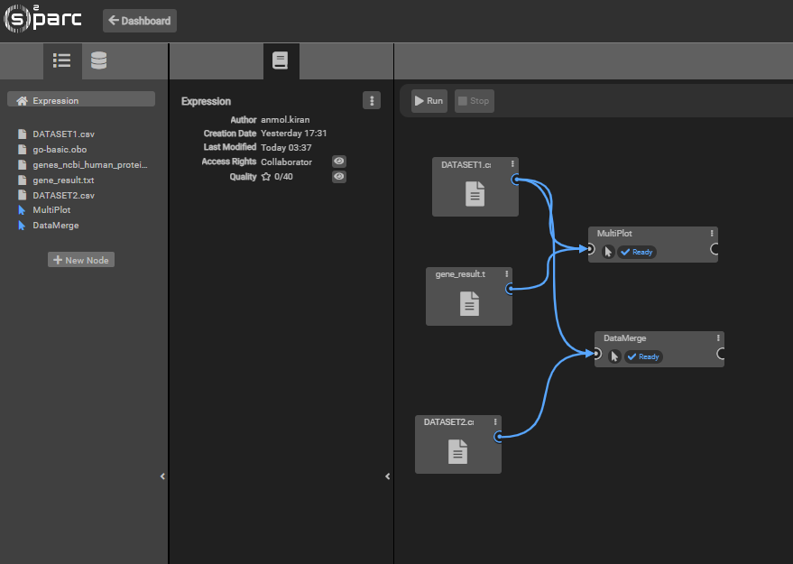
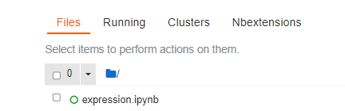
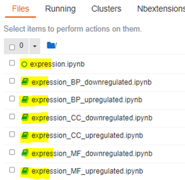
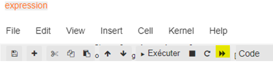
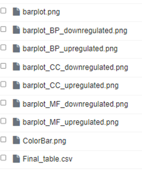

Transcriptomics data visualization in oSPARC
First import your csv files and replace the DATASET1 file.
Then click on "MultiPlot".

Next open te=he jupyter notebook.

Finally run the code of all the .ipynb files.

Run all the code.

All the outputs will generated.

Go to o²S²PARC